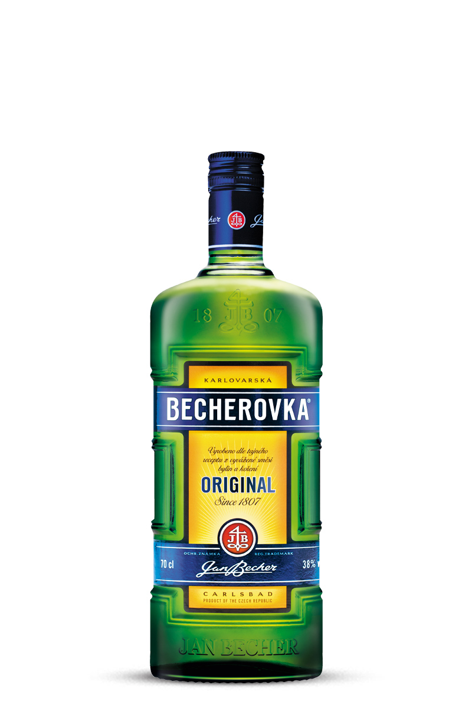
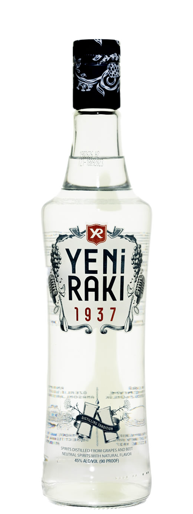
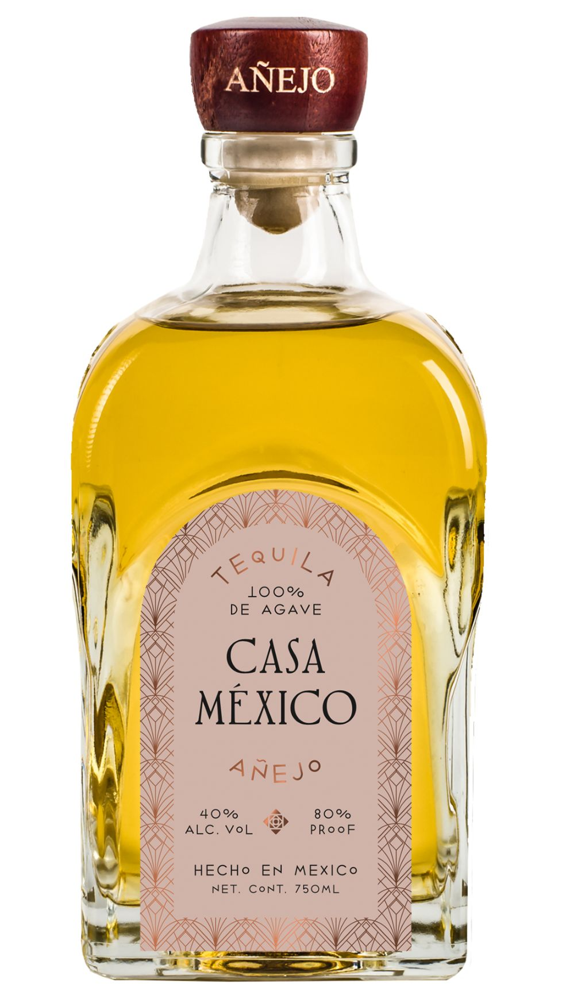

Becherovcka, Češka
Tradicionalno alkoholni češki liker i 100% prirodno piće proizvedeno od kombinacije mješovitog bilja, začina,alkohola, prirodnog šećera i vode iz Karlovy Varya.

Yeni Raki, Turska
Ima okus kao sirup protiv kašlja, a izrađuje se od sirovina grožđa i dodaje se sjeme anisa, neki kod kuće Yeni rade od datulja i smokvi.

Tequila, Meksiko
Proizvodi se od vrlo poznate biljke agave. Najčešće se konzumira uz sol i limun za ublažavanje okusa, a pojedini ljudi umjesto limuna koriste karamelu i ostalo voće iz porodice agruma. Meni omilljena :)